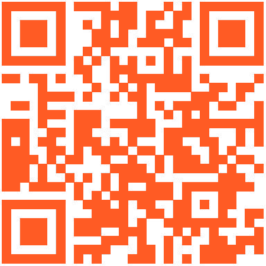

Dyrevenn Vestfold er en privatdrevet organisasjon som hjelper katter.
Hjelp oss å hjelpe dyr i nød!
Ring 45 38 22 72
Vi har katter til adopsjon, omplassering og fjernadopsjon.
Dyrevenn Vestfold er en privatdrevet organisasjon som hjelper katter.
Hjelp oss å hjelpe dyr i nød!
Ring 45 38 22 72
Vi har katter til adopsjon, omplassering og fjernadopsjon.
Dyrevenn Vestfold ble opprettet i juni 2019 og er en frittstående, frivillig organisasjon, uten binding til andre organisasjoner. Vårt formål å hjelpe dyr i nød, primært katter.
Dyrevenn Vestfold skal:
Alle katter fra Dyrevenn Vestfold har får markkur, blir kastrert, chippet (ID-merket) og vaksinert, før adopsjon.
Adopsjonskrav:
Priser:
FIV-positive katter og dyr som krever ekstra oppfølging, adopteres ut uten gebyr. Vi krever imidlertid at ny eier tegner forsikring på katten.
Når vi har kapasitet til det, tar vi imot private katter som trenger å omplasseres på grunn av flytting, sykdom eller død. Helt hjemløse katter vil alltid bli prioritert for inntak, så det kan være at du må vente litt. Vi anbefaler derfor alle som trenger å omplassere et dyr om å ta kontakt så tidlig som mulig.
Ønsker du deg en katt, men har ikke plass, tid, eller lov til å ha en der du bor? Da kan du fjernadoptere en av våre katter og bli en stolt fadder! Velg din favorittkatt, og bidra med et valgfritt beløp (minimum kr 50) per måned. Som fadder får du et flott fjernadopsjonsbevis og regelmessige oppdateringer om kattens liv og utvikling. Bli med oss og gi en katt et bedre liv, selv på avstand!
Det er flere ting du kan gjøre for å hjelpe oss. Vi trenger økonomisk støtte, men også hjelp til frivillig arbeid på hjelpesenteret og ute i felt.
Åpningstider
Tirsdag: 17:00 – 19:00
Torsdag: 17:00 – 19:00
Hvis du ønsker å besøke oss andre dager, ta kontakt for å sette opp en avtale
Adresse: Roveveien 174, 3233 Sandefjord
Vårt vippsnummer er: 570826
Støtt oss enkelt og raskt med Vipps
Grasrotandelen er vår viktigste inntektskilde, så sett gjerne Dyrevenn Vestfold som din mottaker
I forbindelse med fødselsdager er det mange som velger å arrangere en innsamling til støtte for Dyrevenn Vestfold